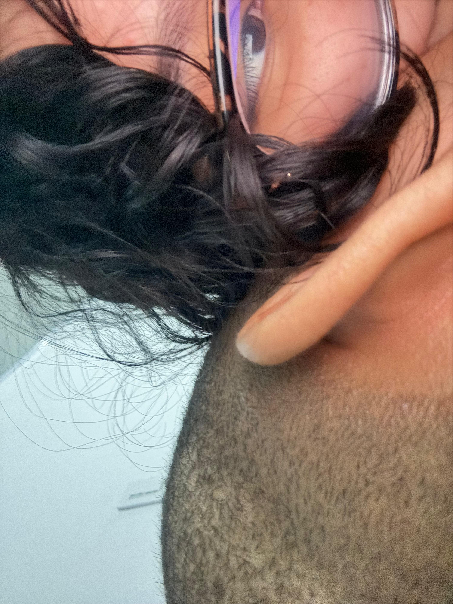

🌟 Eres increíble y vas a romperla en el ICFES 🌟
Holaaa Stheph, ojalá hoy empieces el día con calma en el corazón y con la certeza de que todo lo que estás viviendo tiene un propósito, incluso si ahora no lo entiendes del todo. Sé que últimamente te has sentido en decadencia, con mucho estrés y cargada por el ritmo del día a día. Pero también sé que dentro de ti hay una fortaleza enorme, una que siempre te ha ayudado a salir adelante incluso cuando sientes que no puedes más.
A veces la vida solo nos está pidiendo que respiremos, que bajemos el ritmo y recordemos que no tenemos que cargar con todo solos. Y ahí es donde entra Dios. Él siempre está, esperando que le entregues tus cargas, tus miedos y tus días difíciles.
Si tienes un tiempito hoy, y como es miércoles, podrías pasar por la iglesia (aunque no es necesario, porque igual puedes hablar con Él desde tu casa). Pero créeme, a veces estar ahí, en silencio, te llena de una paz distinta, esa que solo Dios sabe dar.
(Y si pudiera, te acompañaría… pero bueno, ando cojo JAJAJAJA. Así que por lo menos te acompaño en espíritu).
De verdad, pídele a Dios que te dé calma, porque Él escucha, siempre. Y aunque ahora todo parezca pesado, pronto vas a ver cómo todo empieza a acomodarse. Tú eres fuerte, lo has sido siempre, aunque sé que a veces te agota serlo todo el tiempo. Pero también tienes derecho a descansar, a soltar y dejarte cuidar.
Empieza el día con fe, con esperanza y con la certeza de que todo va a estar bien. Porque lo va a estar. Recuerda que eres luz, y aunque a veces no lo veas, Dios sigue obrando en ti. Espero tengas un día lindo como tus ojitos 🌷
💫 Pronto más mensajitos lindos para ti 💕
(Yo se que esperas mas mensajes, pero no te has puesto a pensar que a lo mejor yo quiero un mensaje tuyo tambien?)
Ha pasado un mes… pero sinceramente se ha sentido como un año.
Un mes en el que te he extrañado más de lo que pensé que podría extrañar a alguien.
Y aunque sé que cuando tomaste la decisión de terminar fue porque sentías que lo que estaba pasando con la relación no era lo que realmente querías y lo respeto.
De corazón, lo respeto.
También entiendo que lo hiciste por cuidar tu corazón, ese corazón que nunca tuve la intención de dañar. Y por cuidar tu paz, que también importa.
Sé que cometí errores, y que en muchos momentos no estuve a la altura de lo que merecías.
Hoy lo entiendo, lo acepto y trabajo cada día para no repetirlos. Obvio no soy perfecto, y me falta mucho por aprender, pero quiero que sepas que si decides abrir tu corazón hacia mí otra vez, no lo apuñalaré ni lo haré dudar.
Todo lo contrario: quiero cuidarlo, protegerlo y amarlo más de lo que lo hice antes.
Quiero ser esa calma que te dé seguridad,
esa presencia que sume en tus días,
y no alguien que te quite la paz.
He pensado mucho en lo que fui, en lo que hice mal, y también en lo que no hice.
Sé que tuve muchas fallas, y por eso todavía me siento culpable.
Pero también había cosas tuyas que no me gustaban, y aun así, nunca se me pasó por la cabeza la idea de terminar.
Porque siempre quise seguir caminando contigo, incluso cuando las cosas se ponían difíciles.
No lo digo como reclamo, lo digo desde la paz.
Porque entiendo que cada quien actúa según lo que siente en ese momento.
Estos días he pensado mucho.
Me he dado cuenta de que nos faltó comunicación, tanto como pareja como de mi parte hacia ti.
Me guardé cosas, me callé otras. Y ahora entiendo que no siempre está bien cargar con todo uno solo.
Créeme que he estado trabajando en eso.
En crecer, en sanar, en entender.
No solo por lo que nos pasó, sino por mí.
Porque si uno no cambia por dentro, las historias se repiten.
Sé que no puedo cambiar lo que hice en el pasado, pero sí puedo controlar lo que hago en el presente.
Y eso es lo que estoy intentando hacer:
mejorar, aprender, y convertirme en alguien que no solo hable de amor, sino que lo demuestre con hechos, con paciencia y con empatía.
Porque entendí que amar no es solo decirlo,
es cuidar, escuchar, respetar y construir.
Esto que me pasó con la fractura me hizo pensar mucho. Gracias a Dios fue eso y no algo más grave.
Y no es por ser exagerado, pero me hizo entender que pueden pasar cosas cuando menos lo esperamos, que hoy estamos y quizá mañana no. Esta pausa forzada me obligó a frenar, a pensar y a reflexionar sobre lo que realmente importa. Y entre todo eso, entendí que tengo que hacer las cosas antes de que ya no haya reversa.
Sé que por mis cosas, por lo que pasaba por mi mente, no me di cuenta —o me di cuenta muy tarde— de lo que debía hacer.
Ya no quiero más eso en mi vida.
Quiero hacer las cosas bien, y hacerlas bien contigo. Solo espero que algún día Dios y tú me lo permitan.
Tal vez ahora no sea la mejor versión de mí, pero estoy trabajando cada día para serlo. Para sanar, crecer y corregir lo que alguna vez dañé sin querer.
Y por si todavía te lo preguntas o algún día la vida te hace preguntarte si yo estaría dispuesto a intentarlo otra vez…
quiero que sepas que la respuesta siempre será sí.
Sí, pero haciéndolo bien.
Con paciencia, con amor, con comunicación
y con Dios guiándonos, porque solo Él sabe lo que hay en nuestros corazones.
A pesar de todo esto, sigo pensando que eres la mujer que quiero para mi vida.
Te quiero demasiado. Y como una vez te lo dije: contigo quiero todo, y sin ti nada.
Quiero que sepas que todo lo que alguna vez te dije "los te quiero, los te amo, los te extraño" fue real. Cada palabra.
Puede que me encuentre un poco agotado emocionalmente, pero aun así quería escribirte, porque todavía hay algo en mí que no sabe ni quiere decir adiós.
Lo siento si molesto, de verdad, nunca será mi intención hacerlo.
Quisiera tener la fuerza que tú tienes para no escribirme, para ignorarme y para seguir.
Pero espero que me entiendas al no dejarte ir.
La verdad me está costando,
porque yo me imaginaba una vida contigo, no una vida sin ti.
Tal vez por eso me aferro tanto,
porque cada plan, cada sueño y cada día que pensaba en el futuro, siempre te incluía a ti.
También porque siento que hubo muchas cosas que nos faltaron por vivir.
Pero aun así te doy gracias por todo lo vivido,
por lo aprendido, y por haber sido mi lugar bonito y seguro.
Y no te hablo desde la nostalgia, sino desde el amor que sigue aquí: intacto, paciente y con fe. Porque contigo tengo mis intenciones claras.
Y aunque no sé qué está pasando por tu mente en este momento,
solo quiero que sepas que quiero luchar por esto contigo,
porque creo que aún vale la pena intentarlo.
Si decides darme una nueva oportunidad, prometo dar lo mejor de mí,
para que tú también puedas sentirte en paz y dar lo mejor de ti y tengamos la certeza de que esta vez nuestro “Love Affair” será para siempre.
Y si no… lo entiendo, de verdad.
Porque pase lo que pase...
Te amo, amor de mi vida 💜
Holaaa Stheph
Que loco, hoy se cumple exactamente un mes desde que nos dejamos.
Y sinceramente, ha sido un mes en el que he aprendido muchas cosas… pero como ya te dije también ha sido uno en el que te he extrañado más de lo que imaginé que se podía extrañar a alguien.
Me hubiese gustado que las cosas no se tornaran así, pero bueno, solo Dios sabe por qué todo se dio de esa manera.
Aun así, no ha pasado ni un solo día sin que piense en ti, como lo hago desde el dia en que conectamos.
Tampoco ha pasado un día sin que le pida a Dios por ti, por tu bienestar, por tu paz y porque la vida te sonría.
Obviamente quiero estar contigo.
Quiero que luchemos para que las cosas se nos den, porque te quiero demasiado y porque creo que lo nuestro vale la pena.
Pero también entiendo si prefieres guardar distancia.
Tú sabes que no soy una mala persona, y si me dieras la oportunidad de intentar las cosas otra vez, no te fallaría.
Por que se que no soy perfecto y que en mivida hhe cometido errores, sí, pero también he aprendido de ellos.
Y aunque sé que las palabras no bastan, estoy seguro de que si los dos lo intentamos, podemos llegar lejos, porque el amor que sentimos fue y sigue siendo real.
Desde ese 10 de junio en que te conocí, jamás imaginé que iba a tener una conexión tan bonita con alguien.
Aunque tengo mucho que aprender, quiero hacerlo contigo.
Sé que tengo cosas por corregir, pero quiero corregirlas contigo.
Y aunque todavía no he llegado a mi mejor versión, quiero que seas tú quien la disfrute, porque aún estoy enamorado de ti.
Y aunque eres demasiado hermosa,
no me enamoré solo de tu físico:
me enamoré de tu forma de pensar,
de cómo ves la vida de un modo distinto,
de tu esencia, de tu forma de sentir y de amar.
En fin… me enamoré de STHEPHANYA❤️.
No sé qué estés pensando ahora, ni qué lugar ocupo en tu vida, solo te pdo que pienses lo que te digo en esta carta.
Y si sientes que no vale la pena intentarlo, solo te pido que por favor me lo hagas saber.
Que yo haré todo lo posible por seguir adelante y sacarte de mi mente, aunque me cueste.
Pase lo que pase, quiero que sepas que te quiero con el alma, y que aunque la vida siga su curso, siempre vas a ser alguien especial para mí.
Te deseo lo mejor del mundo, de verdad.
Y si este es el final, me quedo tranquilo sabiendo que todo lo que sentimos fue sincero y que si algún día el destino quiere, volverá a cruzar nuestros caminos.
Te mando un beso y abrazo fuerte mi cielo🫂❤️
02/11/2025
Holaaa de nuevo, me imagino que ya viste las otras cartas, y aunque no me las respondas ni digas nada, yo sé que de alguna forma te llegan al corazón, porque yo las escribo con todo el mio. Pero bueno… aquí voy con otro nuevo.
Hoy fue un día en el que me desperté con toda la actitud, con ganas de que fuera un buen día, pero fue inevitable que en el transcurso del día llegara tu recuerdo una y otra vez.
Me vinieron a la mente los momentos lindos que vivimos, las risas, las conversaciones, las miradas… y con eso también llegó una tristeza que no sé ni cómo estoy disimulando, porque la verdad es que aún te quiero con toda mi alma.
Sé que todo esto está siendo difícil, tanto para ti como para mí.
Por eso quiero que sepas que mi intención no es sonar insistente ni agobiarte, solo ser sincero.
Le he pedido mucho a Dios que, si lo nuestro ya no tiene más historia que escribir, entonces me quite ese deseo del corazón de seguir juntos, que nos ayude a soltar en paz.
Pero te cuento algo: no sé si tú ya no sientes lo mismo por mí, pero por lo menos a mí, ese deseo no se me ha ido.
Sigue ahí, vivo, fuerte, y cada día me recuerda cuánto vales y cuánto deseo hacer las cosas bien contigo.
Obviamente, sé que no todo se soluciona con palabras.
También hay que demostrar, construir y sanar.
Y eso es lo que quiero hacer, porque no quiero perderte.
Y aunque no lo digas, algo dentro de mí me dice que tú, en el fondo, tampoco quieres eso.
Si es así, solo te pido una cosa:(que sé que no es fácil) pero permítete quererme sin miedo.
Permítete creer que sí puede salir bien, que sí puede ser diferente esta vez.
Yo lo haré también, sin reservas, con el corazón abierto, porque estoy convencido de que cuando Dios une dos caminos con tanta conexión desde el principio, no es por casualidad, sino porque hay un propósito.
Y mientras Dios se encarga de mostrarnos cuál es, yo seguiré pidiéndole a el que te cuide, que te dé calma y que te regale claridad para tomar las decisiones correctas en tu vida, pero sobre todo, que te llene de amor y serenidad.
Porque aunque no estemos juntos ahora, mi cariño por ti sigue siendo el mismo: limpio, profundo y lleno de fe.
5 de noviembre